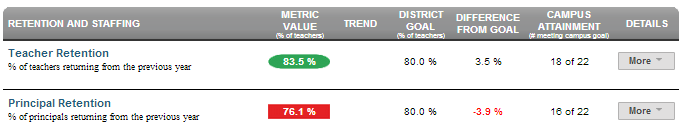

Dashboard Metrics


Principal Retention
Background
District Dashboard Metrics
Identifying and training effective leaders can be a very expensive and time consuming process. It is therefore advantageous for campuses and districts to retain effective principals.
Primary Metric
- Principal Retention: percentage of principals returning from the previous year.
Related Metrics
- None.
User Interface
Dashboard Example
Figure 1 shows the Principal Retention Rate metric as seen on the staff dashboard.

Figure 1 Ed-Fi Principal Retention Rate
Status Definition
The status indicator is determined by district specific goals. The Ed-Fi default goal = 100%
Table 2 shows the status indicators for the principal retention metric.
Metric Indicator | Comparisons | |
Metric Name | Metric Indicator | Trend |
Teacher Retention | Red (Percentage) = fewer principals returning to their same campus from prior year than district goal Green (Percentage) = percentage of principals returning to the same campus from the previous year is equal to or greater than district goal | Current and prior year |
Trend Definition.
Table 3 lists the trend indicators for the Principal Retention metric. .
Trend Indicators for Principal | |||
| Up green | Percentage is higher compared to previous time frame; upward trend is favorable | |
| Unchanged | + 5 percentage points | |
| Down red | Percentage is lower compared to previous time frame; flag indicates unfavorable trend | |
Delta Definition
The Delta column appears only in the campus list and is the absolute value of the difference between the principal retention percentage and the campus goal. If the retention percentage is below the campus goal, the delta percentage is displayed in red. If the attendance percentage is equal to or above the campus goal, the delta percentage is displayed in black.
Periodicity
Best practice is to load the data for this metric each semester.
Recommended Load Characteristics | |
Calendar | Throughout the school year |
Frequency of data load | Yearly |
Latency | Year |
Interchange schema | Interchange-StaffAssociation.xsd |
Tooltips
The standard tool tips for the metric definition, column headers, and help functions display for this metric.
The following are tooltips specific to the Teacher Education metric:
- 'More' indicates drill down to view ‘Principal Retention by Campus’
 is ‘No change from the prior period'
is ‘No change from the prior period' is ‘Getting worse from the prior period’
is ‘Getting worse from the prior period’ is 'Getting better from the prior period'
is 'Getting better from the prior period'
Business Rules
The Principal Retention metric displays the percentage of principals returning from the previous year.
Data Assumptions
- Data is available in district source systems.
Computed Values
Table 5 defines how values are calculated for the metric. The result of the calculation displays in the Status column on the staff dashboard.
Metric Values | |
Teacher Retention | Total number of principals on a campus currently who were on the same campus in the prior year/the total number of principals in the district the prior year |
Data Anomalies
Footnotes
No footnotes are need for this metric.
Date of Refresh
No date of refresh is needed for this metric.
Active Campuses
This metric should not include teachers from campuses that have been closed or are no longer active.
Implementation Considerations
Principal Identity
Maintaining a correct and consistent principal identity is important given that relevant principal data resides in a number of systems: human resources systems, financial systems, just to name a few. Most systems use some sort of unique identifier. However, sometimes this identifier is entered incorrectly or sometimes different systems use different identifiers.
Drill Downs
Drill Down Views
The dashboards include the option to drill down and see more detail that is associated with a metric. Table 6 lists the drill down views that are defined for this metric.
| Campus List | List of campuses and whether or not they are meeting their goal for this metric for the specified period. |